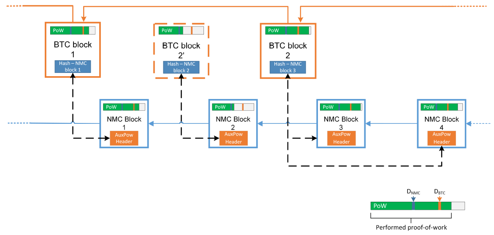
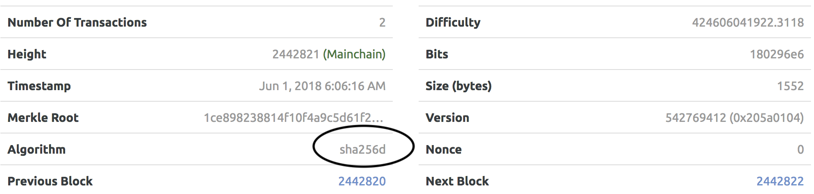
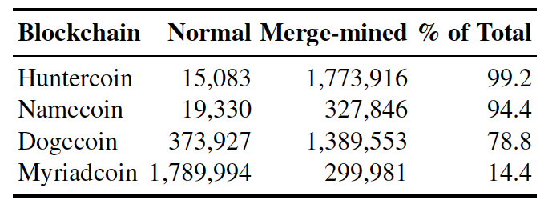

Merged Mining Introduction
- What is Merged Mining?
- Merged Mining with Multiple Auxiliary Chains
- Merged Mining - Interesting Facts and Case Studies
- Attack Vectors
- References
- Contributors
What is Merged Mining?
Merged mining is the act of using work done on another blockchain (the Parent) on one or more than one Auxiliary blockchain and to accept it as valid on its own chain, using Auxiliary Proof-of-Work (AuxPoW), which is the relationship between two blockchains for one to trust the other's work as their own. The Parent blockchain does not need to be aware of the AuxPoW logic, as blocks submitted to it are still valid blocks [1].
As an example, the structure of merged mined blocks in Namecoin and Bitcoin is shown here [25]:

A transaction set is assembled for both blockchains. The hash of the AuxPoW block header is then inserted in the "free" bytes region (coinbase field) of the coinbase transaction and submitted to the Parent blockchain's Proof-of-Work (PoW). If the merge miner solves the block at the difficulty level of either blockchain or both blockchains, the respective block(s) are reassembled with the completed PoW and submitted to the correct blockchain. In the case of the Auxiliary blockchain, the Parent's block hash, Merkle tree branch and coinbase transaction are inserted in the Auxiliary block's AuxPoW header. This is to prove that enough work that meets the difficulty level of the Auxiliary blockchain was done on the Parent blockchain ([1], [2], [25]).
The propagation of Parent and Auxiliary blocks is totally independent and only governed by each chain's difficulty level. As an example, the following diagram shows how this can play out in practice with Namecoin and Bitcoin when the Parent difficulty (DBTC) is more than the Auxiliary difficulty (DNMC). Note that BTC block 2' did not become part of the Parent blockchain propagation.

Merged Mining with Multiple Auxiliary Chains
A miner can use a single Parent to perform merged mining on multiple Auxiliary blockchains. The Merkle tree root of a Merkle tree that contains the block hashes of the Auxiliary blocks as leaves must then be inserted in the Parent's coinbase field as shown in the following diagram. To prevent double spending attacks, each Auxiliary blockchain must specify a unique ID that can be used to derive the leaf of the Merkle tree where the respective block hash must be located [25].

Merged Mining - Interesting Facts and Case Studies
Namecoin (#307) with Bitcoin (#1)
- Namecoin, the first fork of Bitcoin, introduced merged mining with Bitcoin [1] from block 19,200 onwards [3]. At the time of writing (May 2018), the block height of Namecoin was greater than 400,500 [4].
- Over the five-day period from 23 May 2018 to 27 May 2018, only 226 out of 752 blocks posted transaction values over and above the block reward of 25 NMC, with an average transaction value of 159.231 NMC including the block reward. [4]
- Slush Pool merged mining Namecoin with Bitcoin rewards all miners with BTC equivalent to NMC via an external exchange service [5].
- P2pool, Multipool, Slush Pool, Eligius and F2pool are cited as top Namecoin merged mining pools [6].
| @ 2018-05-30 | Bitcoin [16] | Namecoin [16] | Ratio |
|---|---|---|---|
| Block time target (s) | 600 | 600 | 100.00% |
| Hash rate (Ehash/s) | 31.705 | 21.814 | 68.80% |
| Blocks count | 525,064 | 400,794 | 76.33% |
Dogecoin (#37) with Litecoin (#6)
- Dogecoin introduced merged mining with Litecoin [8] from block 371,337 onwards [9]. At the time of writing (May 2018), the block height of Dogecoin was greater than 2,240,000 [10].
- Many in the Dogecoin user community believe merged mining with Litecoin saved Dogecoin from a 51% attack [8].
| @ 2018-05-30 | Litecoin [16] | Dogecoin [16] | Ratio |
|---|---|---|---|
| Block time target (s) | 150 | 60 | 40.00% |
| Hash rate (Thash/s) | 311.188 | 235.552 | 75.69% |
| Blocks count | 1,430,517 | 2,241,120 | 156.67% |
Huntercoin (#779) with Bitcoin (#1) or Litecoin (#6)
- Huntercoin was released as a live experimental test to see how blockchain technology could handle full-on game worlds [22].
- Huntercoin was originally designed to be supported for only one year, but development and support will continue [22].
- Players are awarded coins for gaming, thus the world's first human mineable cryptocurrency.
- Coin distribution: 10 coins per block, nine for the game world and one for the miners [22].
| @ 2018-06-01 | Huntercoin |
|---|---|
| Block time target (s) | 120 |
| blockchain size (GB) | 17 |
| Pruned blockchain size (GB) | 0.5 |
| Blocks count | 2,291,060 |
| PoW algorithm (for merged mining) | SHA256, Scrypt |
Myriad (#510) with Bitcoin (#1) or Litecoin (#6)
- Myriad is the first currency to support five PoW algorithms and claims its multi-PoW algorithm approach offers exceptional 51% resistance [23].
- Myriad introduced merged mining from block 1,402,791 onwards [24].
| @ 2018-06-01 | Myriad |
|---|---|
| Block time target (s) | 60 |
| blockchain size (GB) | 2.095 |
| Blocks count | 2,442,829 |
| PoW algorithm (for merged mining) | SHA256d, Scrypt |
| PoW algorithm (others) | Myr-Groestl, Skein, Yescrypt |
-
Some solved multi-PoW block examples follow:

- 

Monero (#12)/DigitalNote (#166) + FantomCoin (#1068)
- FantamCoin was the first CryptoNote-based coin to develop merged mining with Monero, but was abandoned until DigitalNote developers became interested in merged mining with Monero and revived FantamCoin in October 2016 ([17], [18], [19]).
FantamCoin Release notes 2.0.0
- Fantomcoin 2.0 by XDN-project, major FCN update to the latest
cryptonotefoundation codebase
- New FCN+XMR merged merged mining
- Default block size - 100Kb
DigitalNote Release notes 4.0.0-beta
- EmPoWering XDN network security with merged mining with any CryptoNote
cryptocurrency
- Second step to the PoA with the new type of PoW merged mining blocks
- DigitalNote and FantomCoin merged mining with Monero are now stuck with the recent CryptoNight-based Monero forks such as Monero Classic and Monero Original after Monero's recent hard fork to CryptoNight v7. (Refer to Attack Vectors.)
| @ 2018-05-31 | Monero [16] | DigitalNote [16] | Ratio |
|---|---|---|---|
| Block time target (s) | 120 | 240 | 200.00% |
| Hash rate (Mhash/s) | 410.804 | 13.86 | 3.37% |
| Blocks count | 1,583,869 | 660,075 | 41.67% |
| @ 2018-05-31 | Monero [16] | FantomCoin [16] | Ratio |
|---|---|---|---|
| Block time target (s) | 120 | 60 | 50.00% |
| Hash rate (Mhash/s) | 410.804 | 19.29 | 4.70% |
| Blocks count | 1,583,869 | 2,126,079 | 134.23% |
Some Statistics
Merge-mined blocks in some cryptocurrencies on 18 June 2017 [24]:

Observations
- The Auxiliary blockchain's target block times can be smaller than, equal to or larger than the Parent blockchain.
- The Auxiliary blockchain's hash rate is generally smaller than, but of the same order of magnitude as that of, the Parent blockchain.
- A multi-PoW algorithm approach may further enhance 51% resistance.
Attack Vectors
51% Attacks
-
51% attacks are real and relevant today. Bitcoin Gold (rank #28 @ 2018‑05‑29) and Verge (rank #33 @ 2018‑05‑29) suffered recent attacks with double spend transactions following ([11], [12]).
-
In a conservative analysis, successful attacks on PoW cryptocurrencies are more likely when dishonest entities control more than 25% of the total mining power [24].
-
Tari tokens are envisaged to be merged mined with Monero [13]. The Monero blockchain security is therefore important to the Tari blockchain.
-
Monero recently (6 April 2018) introduced a hard fork with upgraded PoW algorithm CryptoNight v7 at block height 1,546,000 to maintain its Application Specific Integrated Circuit (ASIC) resistance and hence guard against 51% attacks. The Monero team proposes changes to their PoW every scheduled fork (i.e. every six months) ([14], [15]).
-
An interesting question arises regarding what needs to happen to the Tari blockchain if the Monero blockchain is hard forked. Since the CryptoNight v7 hard fork, the network hash rate for Monero hovers around approximately 500MH/s, whereas in the two months immediately prior it was approximately 1,000MH/s [20](https://chainradar.com/xmr/chart). Thus 50% of the hash power can be ascribed to ASICS and botnet miners.

NiceHash statistics for CryptoNight v7 [21] show a lag of two days for approximately 100,600 miners to get up to speed with providing the new hashing power after the Monero hard fork.

The Tari blockchain will have to fork together with or just after a scheduled Monero fork. The Tari blockchain will be vulnerable to ASIC miners until it has been forked.
Double Proof
- A miner could cheat the PoW system by putting more than one Auxiliary block header into one Parent block [7].
- Multiple Auxiliary blocks could be competing for the same PoW, and could subject your Auxiliary blockchain to nothing-at-stake attacks if the chain is forked, maliciously or by accident, with consequent attempts to reverse transactions ([7], [26]).
- More than one Auxiliary blockchain will be merge-mined with Monero.
Analysis of Mining Power Centralization Issues
With reference to [24] and [25]:
- In Namecoin, F2Pool reached and maintained a majority of the mining power for prolonged periods.
- Litecoin has experienced slight centralization since mid-2014, caused by Clevermining and F2Pool, among others.
- In Dogecoin, F2Pool was responsible for generating more than 33% of the blocks per day for significant periods, even exceeding the 50% threshold around the end of 2016.
- Huntercoin was instantly dominated by F2Pool and remained in this state until mid-2016.
- Myriadcoin appears to have experienced only a moderate impact. Multi-merge-mined blockchains allow for more than one parent cryptocurrency and have a greater chance of acquiring a higher difficulty per PoW algorithm than the respective parent blockchain.
- Distribution of overall percentage of days below or above the centralization indicator thresholds on 18 June 2017 was as follows:

Introduction of New Attack Vectors
With reference to [24] and [25]:
- Miners can generate blocks for the merge-mined child blockchains at almost no additional cost, enabling attacks without risking financial losses.
- Merged mining as an attack vector works both ways, as parent cryptocurrencies cannot easily prevent being merge-mined by auxiliary blockchains.
- Merged mining can increase the hash rate of auxiliary blockchains, but it is not conclusively successful as a bootstrapping technique.
- Empirical evidence suggests that only a small number of mining pools are involved in merged mining, and they enjoy block shares beyond the desired security and decentralization goals.
References
[1] "Merged Mining Specification" [online). Available: https://en.bitcoin.it/wiki/Merged_mining_specification. Date accessed: 2018‑05‑28.
[2] "How does Merged Mining Work?" [Online.] Available: https://bitcoin.stackexchange.com/questions/273/how-does-merged-mining-work. Date accessed: 2018‑05‑28.
[3] "Merged-Mining.mediawiki" [online]. Available: https://github.com/namecoin/wiki/blob/master/Merged-Mining.mediawiki. Date accessed: 2018‑05‑28.
[4] "Bchain.info - Blockchain Explorer (NMC)" [online]. Available: https://bchain.info/NMC. Date accessed: 2018‑05‑28.
[5] "SlushPool Merged Mining" [online]. Available: https://slushpool.com/help/first-aid/faq-merged-mining. Date accessed: 2018‑05‑28.
[6] "5 Best Namecoin Mining Pools of 2018 (Comparison)" [online]. Available: https://www.prooworld.com/namecoin/best-namecoin-mining-pools. Date accessed: 2018‑05‑28.
[7] "Alternative Chain" [online]. Available: https://en.bitcoin.it/wiki/Alternative_chain#Protecting_against_double_proof. Date accessed: 2018‑05‑28.
[8] "Merged Mining AMA/FAQ" [online]. Available: https://www.reddit.com/r/dogecoin/comments/22niq9/merged_mining_amafaq. Date accessed: 2018‑05‑29.
[9] "The Forkening is Happening at ~9:00AM EST" [online]. Available: https://www.reddit.com/r/dogecoin/comments/2fyxg1/the_forkening_is_happening_at_900am_est_a_couple. Date accessed: 2018‑05‑29.
[10] "Dogecoin Blockchain Explorer" [online]. Available: https://dogechain.info. Date accessed: 2018‑05‑29.
[11] "Bitcoin Gold Hit by Double Spend Attack, Exchanges Lose Millions" [online]. Available: https://www.ccn.com/bitcoin-gold-hit-by-double-spend-attack-exchanges-lose-millions. Date accessed: 2018‑05‑29.
[12] "Privacy Coin Verge Succumbs to 51% Attack" [Again]. [Online.] Available: https://www.ccn.com/privacy-coin-verge-succumbs-to-51-attack-again. Date accessed: 2018‑05‑29.
[13] "Tari Official Website" [online]. Available: https://www.tari.com. Date accessed: 2018‑05‑29.
[14] "Monero Hard Forks to Maintain ASIC Resistance, but ‘Classic’ Hopes to Spoil the Party" [online]. Available: https://www.ccn.com/monero-hard-forks-to-maintain-asic-resistance-but-classic-hopes-to-spoil-the-party. Date accessed: 2018‑05‑29.
[15] "PoW Change and Key Reuse" [online]. Available: https://getmonero.org/2018/02/11/pow-change-and-key-reuse.html. Date accessed: 2018‑05‑29.
[16] "BitInfoCharts" [online]. Available: https://bitinfocharts.com. Date accessed: 2018‑05‑30.
[17] "Merged Mining with Monero" [online]. Available: https://minergate.com/blog/merged-mining-with-monero. Date accessed: 2018‑05‑30.
[18] "ANN DigitalNote |XDN| - ICCO Announce - NEWS" [online]. Available: https://bitcointalk.org/index.php?topic=1082745.msg16615346#msg16615346. Date accessed: 2018‑05‑31.
[19] "DigitalNote xdn-project" [online]. Available: https://github.com/xdn-project. Date accessed: 2018‑05‑31.
[20] "Monero Charts" [online]. Available: https://chainradar.com/xmr/chart. Date accessed: 2018‑05‑31.
[21] "Nicehash Statistics for CryptoNight v7" [online]. Available: https://www.nicehash.com/algorithm/cryptonightv7. Date accessed: 2018‑05‑31.
[22] "Huntercoin: A Blockchain based Game World" [online]. Available: http://huntercoin.org. Date accessed: 2018‑06‑01.
[23] "Myriad: A Coin for Everyone" [online]. Available: http://myriadcoin.org. Date accessed: 2018‑06‑01.
[24] "Merged Mining: Curse or Cure?" [Online.] Available: https://eprint.iacr.org/2017/791.pdf. Date accessed: 2019‑02‑12.
[25] Merged Mining: Analysis of Effects and Implications [online]. Available: http://repositum.tuwien.ac.at/obvutwhs/download/pdf/2315652. Date accessed: 2019‑02‑12.
[26] "Problems - Consensus - 8. Proof of Stake" [online]. Available: https://github.com/ethereum/wiki/wiki/Problems. Date accessed: 2018‑06‑05.